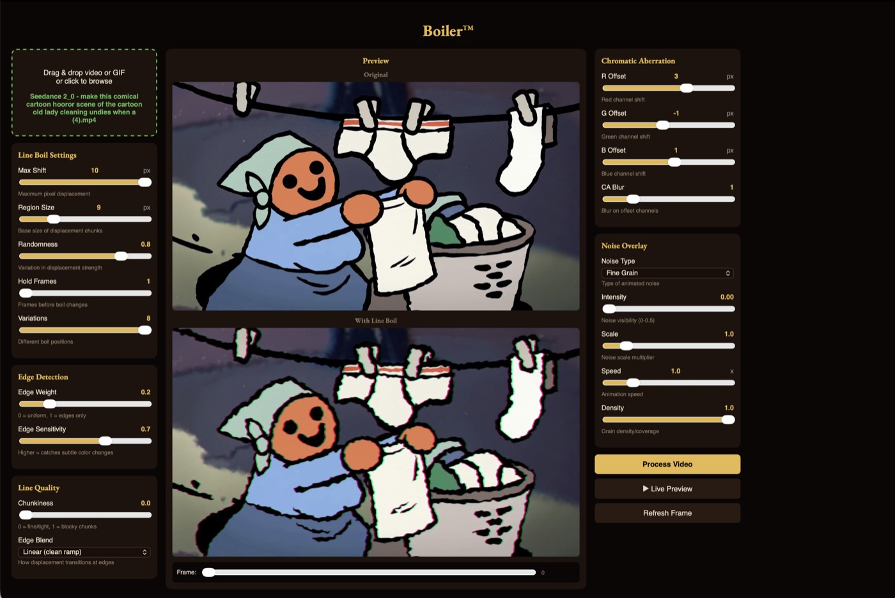

The boil
Wobble that follows the edges in the frame, from a faint shimmer to a full tremor. Hold it for two frames or six.
Boiler gives video the restless, redrawn edge of hand-drawn animation. Drop a clip in, move a few sliders, save it out.
Same footage, one pass through Boiler. The edges are redrawn a few pixels off on every held frame, the way a hand redraws them.
Drag to compare
Wobble that follows the edges in the frame, from a faint shimmer to a full tremor. Hold it for two frames or six.
Pull the red and blue channels apart for old film and worn tape.
Fine grain, coarse grain, TV static, Perlin, scanlines. Layer it over the boil.
Scrub a frame or play the loop while you work. No waiting on a render to see a slider.
MP4, MOV, and animated GIF go in. MP4 comes out, audio intact.
No Python, no Terminal, no Homebrew. ffmpeg ships inside the app. Your video never leaves the machine.
Drop a video in. The original sits on top, the boiled version below it.
Move the sliders. Shift sets how far edges wander. Hold sets how long each drawing stays up. Everything updates in the preview.
Process, then save. Pick the folder, and the file lands there.

Line boil is the constant shimmer along the outlines in hand-drawn animation, caused by an artist redrawing every frame slightly differently so no line ever lands in exactly the same place twice. Boiler puts that wander back into footage that never had it.
Yes. Free, and open source under the MIT license.
The prebuilt app is macOS 12 or later on Apple Silicon, because the installer is built for that architecture. Nothing in the code requires it, so Intel Macs, Windows and Linux run it from source. The test suite runs on all three in CI.
MP4, MOV, and animated GIF go in. An MP4 comes out, H.264, with the original audio.
No. Everything happens on your machine. ffmpeg is bundled inside the app and nothing goes over the network.
Roughly a second per frame, so a thirty second clip is a few minutes. Check settings on a single frame in the preview before committing to a full pass.
Longer answers in the guides: what line boil is, how to apply it, what every setting does, making video look hand-drawn, and chromatic aberration.
Boiler came out of making a western cartoon. The same studio makes a game set in the same world.
A daily game about cutting things exactly in half by eye. One puzzle a day, one attempt, scored on how close you got. Free on iPhone.
Signed and notarized by Apple, so it opens on a double-click.
Download Boiler 1.0.0The download is macOS 12 or later on Apple Silicon. Intel Macs, Windows and Linux run it from source, tested on all three in CI.